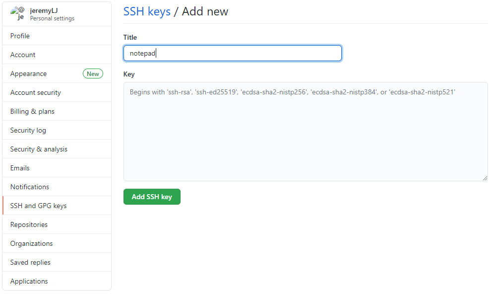
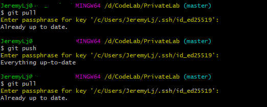

通过SSH连接GitHub
之前一直使用账号密码的方式连接GitHub，进行远程仓库代码的拉取和推送，因为账号密码认证的小窗口会记住账号密码，所以感觉也还挺方便的。不过GitHub出了新规：Git操作的身份验证将放弃密码[1]，改用令牌或SSH密钥[2]。下面截图是博主最近使用密码进行GitHub认证后，GitHub注册邮箱收到的一封提醒邮件。
目前虽然还是能通过输入账号密码进行GitHub认证，但是最近博主发现在弹出窗口即使输入了正确的账号密码依然认证失败，必须得在接下来的Git命令行再次输入账号密码才能验证通过。这样每次提交或拉取远程仓库的代码就不那么方便了。
那我们就来看看如何通过SSH连接GitHub，它真的有那么香吗？！
话不多说，我们直接去找官方文档试验一把，官方文档可以通过登录GitHub后，进入个人设置，打开SSH and GPG keys菜单，发现SSH keys下面有句话，点击打开generating SSH keys链接即是文档说明。你也可以直接打开本文底部的链接[3]。
¶SSH协议和SSH keys
文档[3:1]描述的还是非常清楚的，首先说明了SSH协议和SSH key：使用SSH协议可以连接和认证远程服务器和服务。使用SSH keys可以在连接GitHub时，不用每次都输入用户名和密码。
说明：以下操作均是基于Windows，Mac或Linux请参考文档的相应说明。
¶检查本机是否存在SSH keys
在生成新的SSH keys之前，我们可以看下之前是否有意或无意的生成过。
- 打开Git Bash命令行窗口，输入如下命令:
1
ls -al ~/.ssh
- 看一下输出内容里有没有*.pub后缀的文件名，类似以下的这些文件：
- id_rsa.pub
- id_ecdsa.pub
- id_ed25519.pub
- 如果有的话，说明以前生成过SSH keys，就不用重新生成了，可以直接进入
将SSH key添加到GitHub账号步骤。如果看到如下的输入内容，说明没有现成的SSH public keys，那我们就生成一个新的SSH key。
¶生成新的SSH key
-
打开Git Bash或者在上一步打开的命令行窗口继续
-
输入下面一行命令，注意邮箱为你注册的GitHub邮箱。另外该命令执行过程中有3处需要交互的输入确认。
1
ssh-keygen -t ed25519 -C "your_email@example.com"
-
第一个交互输入确认是存放SSH key文件的路径
Enter file in which to save the key，一般来说只要直接按回车Enter键保留默认配置就行了，比如博主的默认存放文件具体位置如下图：
上面截图的是私钥/公钥对，带有pub后缀的为公钥文件。
-
第二和第三个交互输入确认是录入SSH key的密码，以及再次确认。这里我们可以输入自己能记住而又相对安全的密码。
-
新的SSH key生成成功将会看到如下的输出内容：
¶将SSH key添加到GitHub账号
-
将SSH key的公钥复制到粘贴板，可以执行如下命令，也可以直接打开文件进行复制：
1
clip < ~/.ssh/id_ed25519.pub
-
使用上面用来生成SSH key的邮箱登录GitHub后，进入个人设置，打开SSH and GPG keys菜单，点击SSH Keys旁边的
New SSH Key，将SSH key粘贴进去。标题设置，可以按home、work分，也可以按PC、Notepad分，完全看个人喜好了。
 -
点击
Add SSH key完成添加，如果需要，按要求输入GitHub密码即可。
¶测试SSH连接
当我们创建好SSH key并且添加到GitHub之后，可以测试下SSH连接是否正常。
- 依然在Git Bash命令行，执行命令来尝试连接到GitHub
1
ssh -T git@github.com
- 当看到是否继续连接确认时，输入[yes]，然后看到如下输出内容时，说明连接设置成功了。

¶体验SSH key连接
-
我们直接在已有的代码文件夹下，右键打开Git Bash命令行，熟练的输入git pull，看看能否正常执行。哎，不对啊，怎么还是弹出之前那个需要输入GitHub账号密码的弹窗啊。我们通过执行如下命令，来看下目前连接GitHub的方式。
1
git remote -v
我们看到输出是类似如下的内容，原来是因为连接GitHub代码库的方式还是Https的方式。
1
2origin https://github.com/jeremyLJ/repository.git (fetch)
origin https://github.com/jeremyLJ/repository.git (push) -
那我们看下如何将原来通过https连接代码库的方式换成通过SSH的方式。
-
我们先到GitHub上响应的代码仓库里找到SSH的连接字符，然后复制下来，如下图

-
执行下面一行命令来修改连接方式
1
git remote set-url origin git@github.com:jeremyLJ/privateLab.git
-
-
现在我们再执行下
git remote -v命令，就会发现连接GitHub代码库已经变成了SSH的方式（如下图）。1
2origin git@github.com:jeremyLJ/privateLab.git (fetch)
origin git@github.com:jeremyLJ/privateLab.git (push) -
这时我们再通过
git pull命令来拉取远程仓库的更新，就会看到提示需要输入SSH key设置的密码，当输入正确的密码后，git命令就可以执行成功了。
 -
但是我们发现每次执行远程仓库相关的git命令都需要输入SSH key的密码，参考上面的截图，这的确比较安全，但是确实有点不太方便，那有没有办法不用每次都输入SSH key的密码呢？答案是肯定的。
¶将SSH key添加到ssh-agent
可以通过在Git Bash窗口，手动启动ssh代理，并将SSH key添加进来，做到在当前Git Bash窗口只输入一次SSH key密码。
- 打开代码库所在路径的Git Bash窗口，并在同一窗口执行下面一行命令来启动SSH代理。
1
eval `ssh-agent -s`
- 依然是同一Git Bash窗口，将新生成的SSH key文件添加到SSH代理，需要输入生成SSH key第4步设置的密码。
1
ssh-add ~/.ssh/id_ed25519
- 后面执行git pull以及git push就不用再次输入SSH key的密码了。
现在看下来，虽然我们不用每次都输入SSH key的密码，只用输入一次，但是每次打开Git Bash窗口都需要手动启动SSH代理，并添加SSH key文件，感觉还是不太方便，那能不能自动的完成同样的操作呢？答案是可以的，通过配置脚本。
¶Windows上自动启动SSH代理
根据官方文档[4]的说明，通过配置可以在打开Git Bash或者Git Shell的时候自动运行SSH代理。具体的配置方法如下。
-
复制以下内容并以文件名
.profile保存到当前用户文件夹下，路径C:\Users<当前用户名>\1
2
3
4
5
6
7
8
9
10
11
12
13
14
15
16
17
18
19
20
21env=~/.ssh/agent.env
agent_load_env () { test -f "$env" && . "$env" >| /dev/null ; }
agent_start () {
(umask 077; ssh-agent >| "$env")
. "$env" >| /dev/null ; }
agent_load_env
agent_run_state: 0=agent running w/ key; 1=agent w/o key; 2= agent not running
agent_run_state=$(ssh-add -l >| /dev/null 2>&1; echo $?)
if [ ! "$SSH_AUTH_SOCK" ] || [ $agent_run_state = 2 ]; then
agent_start
ssh-add
elif [ "$SSH_AUTH_SOCK" ] && [ $agent_run_state = 1 ]; then
ssh-add
fi
unset env -
再打开Git Bash窗口时，就会直接提示输入SSH key的密码，验证通过后，后续的git pull以及git push等命令将不再需要验证SSH key，如图所示。
- 这样在其他新开的Git Bash窗口中执行git命令也都不需要验证SSH key密码了，即使把一开始输入SSH key已启动SSH代理的Git Bash窗口关掉，也依然可以不用验证SSH key密码。
- 当然每次重启电脑后，再次打开Git Bash还是需要验证SSH key密码的。
目前来看，在Git Bash中借助自动启动SSH代理来一次性验证SSH连接已经比较方便了，毕竟每次重启电脑才需要再次输入SSH key密码进行SSH连接验证。但是大家都知道一些集成开发工具IDE也集成或支持Git插件，比如博主在Visual Studio Code中直接通过界面进行代码的Pull操作，发现git拉取远程仓库失败，报一个类似如下的错误。
这个错误是什么意思呢，其实通过在终端窗口里执行git pull发现还是因为需要输入SSH key密码的问题，当输入了正确的SSH key密码后，git命令就执行成功了。
对于习惯通过界面进行git拉取和推送操作的小伙伴肯定觉得太不方便了，这时候还有最后一招就是把SSH key的密码重置，就是不设置密码，那样每次就不用验证了，不就一劳永逸了嘛！
¶如何修改SSH key密码
-
我们可以通过命令
ssh-keygen -p来修改或设置SSH key的密码。如果Git Bash当前所在的路径不在C:\Users\<当前用户名>\.ssh下的话，文件路径那里需要提供SSH私钥文件的完成路径，不然会报文件或路径不存在的错误。
-
新的SSH key密码输入和密码确认都是直接回车，表示没有密码。
注意：去掉SSH key密码设置，虽然会带来一定的操作便捷性，同时安全性也就降低了，请大家自行判断！ -
现在再去Visual Studio Code的界面执行git拉取或推送操作，就可以直接成功了，当然Git Bash也不再需要验证SSH key的密码了。
¶结语
关于通过SSH连接GitHub的分享就差不多了，如果大家在实际操作过程中遇到其他的问题，可以参考官方的问题排查文档链接[5]，里面列举了一些常见的错误答疑。
https://github.blog/2020-12-15-token-authentication-requirements-for-git-operations/ ↩︎
https://docs.github.com/articles/generating-an-ssh-key/ ↩︎ ↩︎
https://docs.github.com/en/free-pro-team@latest/github/authenticating-to-github/working-with-ssh-key-passphrases#auto-launching-ssh-agent-on-git-for-windows ↩︎